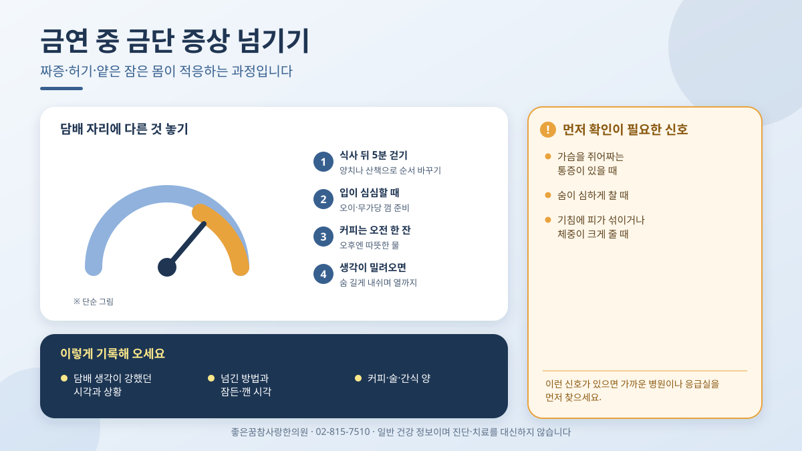

이종호 한의사 감수좋은꿈참사랑한의원 대표원장 (한의사 면허번호 19769)발행 2026-11-26 · 수정 2026-11-26
이 글의 차례
점심을 먹고 나면 손이 저절로 주머니로 갑니다. 담배가 없다는 걸 알면서도요. 동료들이 우르르 밖으로 나가는 뒷모습을 보며 괜히 서랍을 열었다 닫고, 사탕 껍질만 책상 위에 쌓여 갑니다. 오후 회의에서는 사소한 말에도 목소리가 날카로워집니다.
담배를 끊기로 마음먹은 분들이 진료실에서 가장 많이 하시는 말씀은 "제가 이렇게 예민한 사람인 줄 몰랐어요"입니다. 가족에게 짜증을 내고 나서 미안해하고, 밤에는 잠이 얕아 자꾸 깨고, 입이 심심해 군것질이 늘어 체중까지 걱정됩니다.
저는 그런 분들께 먼저 이렇게 말씀드립니다. 지금 겪는 불편은 의지가 약해서가 아니라, 오래 익숙했던 것을 몸이 내려놓는 과정에서 생기는 반응이라고요. 이 반응에는 대체로 흐름이 있고, 그 흐름을 알면 버티는 일이 조금 덜 막막해집니다.
금연은 하루아침에 끝나는 결심이 아니라 몇 주에 걸친 적응입니다. 오늘 글에서는 금단 증상이 어떤 모습으로 오는지, 왜 생기는지, 그 시기를 어떻게 지나면 좋을지를 차근차근 정리해 보겠습니다.
금단 증상은 어떤 모습으로 오나요
담배를 끊고 나서 나타나는 불편은 사람마다 조금씩 다르지만, 진료실에서 자주 듣는 모습은 비슷합니다. 한 가지만 오기도 하고 여러 가지가 겹쳐 오기도 합니다.
- 사소한 일에도 짜증이 나고 참을성이 줄어드는 느낌
- 입이 심심하고 단것이나 짠 과자가 자꾸 당기는 느낌
- 잠들기 어렵거나, 자다가 자주 깨고 꿈이 많아지는 느낌
- 머리가 멍하고 집중이 잘 되지 않는 느낌
- 마음이 들뜨고 가만히 앉아 있기 힘든 느낌
- 변비가 생기거나 배가 더부룩한 느낌
이 가운데 무엇이 가장 크게 오는지에 따라 버티는 방법도 달라집니다. 짜증이 큰 분, 허기가 큰 분, 잠이 흔들리는 분은 각자 먼저 붙잡아야 할 곳이 다릅니다.
왜 담배를 끊으면 짜증과 허기가 몰려올까요
담배 속 니코틴은 뇌에서 기분을 끌어올리고 긴장을 잠깐 풀어 주는 신호를 빠르게 만들어 냅니다. 오랫동안 이 신호에 익숙해진 몸은 니코틴이 들어오지 않으면 그 빈자리를 불편함으로 알립니다. 짜증과 초조함, 집중력 저하는 그 빈자리가 드러나는 모습입니다.
허기는 조금 다른 이유가 겹칩니다. 니코틴은 입맛을 누르는 쪽으로 작용하기 때문에 끊고 나면 입맛이 살아납니다. 여기에 손과 입이 하던 습관이 비어 버리니, 그 자리를 음식으로 채우고 싶어지는 마음이 함께 생깁니다.
습관의 힘도 큽니다. 식사 뒤, 커피를 마실 때, 운전할 때, 화가 났을 때처럼 담배와 짝지어진 순간이 오면 몸이 먼저 반응합니다. 그래서 금단 증상은 몸의 반응과 하루 일과의 빈자리가 함께 만든다고 보시면 이해가 쉽습니다.
한의학에서는 이런 시기를 쌓였던 열과 긴장이 오르내리며 몸이 새 균형을 찾는 과정으로 설명하기도 합니다. 얼굴로 열이 오르고 입이 마르며 가슴이 답답한 분이 있고, 반대로 기운이 빠지고 늘어지는 분도 있어서 진찰에서는 이 차이를 함께 봅니다.
잠이 얕아지는 것도 같은 흐름 안에 있습니다. 니코틴은 몸을 깨우는 쪽으로 작용하는데, 이 자극이 사라지면 잠의 리듬이 새로 자리를 잡기까지 한동안 흔들릴 수 있습니다. 꿈이 생생해지거나 새벽에 일찍 깨는 분도 계십니다.
시기에 따라 달라지는 흐름
대체로 끊고 나서 처음 며칠이 가장 힘들고, 둘째 주쯤부터 강도가 조금씩 줄어드는 분이 많습니다. 짜증과 초조함은 비교적 먼저 잦아들고, 입이 심심한 느낌과 잠의 변화는 조금 더 오래 남기도 합니다.
몇 주가 지나도 특정 순간에 담배 생각이 확 밀려오는 일은 이어질 수 있습니다. 술자리, 큰 스트레스, 오랜만에 만난 흡연 동료처럼 예전의 습관이 강하게 붙어 있던 상황에서 특히 그렇습니다. 이것은 실패의 신호가 아니라 아직 습관의 길이 남아 있다는 뜻입니다.
기침과 가래가 오히려 늘었다고 느끼는 분도 계십니다. 담배를 끊은 뒤 기관지가 스스로 정리를 시작하면서 한동안 가래가 더 느껴질 수 있습니다. 다만 오래 이어지거나 숨이 차는 느낌이 함께 있다면 호흡기 진료를 함께 받아 보시는 것이 좋습니다.
금단 증상과 헷갈리기 쉬운 불편은 무엇인가요
금연 시기에 생긴 불편이 모두 금단 증상인 것은 아닙니다. 마침 그 시기에 다른 일이 겹쳤을 수도 있어서, 금단 증상이라고 단정하기 전에 함께 살펴볼 것들이 있습니다.
기분이 몇 주째 계속 가라앉고, 좋아하던 일에도 흥미가 없어지며, 입맛과 잠이 함께 무너진다면 단순한 금단 증상보다 우울감이 깊어진 것일 수 있습니다. 이런 경우는 정신건강의학과 상담을 함께 받아 보시길 권합니다.
가슴이 두근거리거나 답답한 느낌도 마찬가지입니다. 금연 초기의 긴장 때문일 수도 있지만, 오래 흡연하신 분이라면 심장과 폐를 한 번 점검해 두시는 것이 마음도 편합니다. 금연을 시작하는 김에 건강검진을 함께 계획해 보셔도 좋습니다.
하루 중 담배 생각이 몰려오는 순간들
담배 생각은 하루 내내 같은 세기로 오지 않습니다. 대개 정해진 몇 순간에 몰려옵니다. 아침에 일어나 첫 커피를 마실 때, 점심 식사를 마치고 일어설 때, 일이 막혀 답답할 때, 퇴근길 버스 정류장에서, 저녁 술자리에서처럼요.
이 순간들은 오랫동안 담배와 짝을 이뤄 온 자리입니다. 그래서 몸이 그 상황을 알아차리는 순간 손이 먼저 움직입니다. 이 자리를 미리 알고 있으면 그 시각에 맞춰 다른 행동을 준비해 둘 수 있습니다.
예를 들어 아침 커피와 담배가 짝이었다면 한동안 커피 대신 따뜻한 차로 바꾸거나, 커피를 마시는 장소를 바꿔 보는 것만으로도 생각의 세기가 달라지는 분이 많습니다. 작은 순서 하나를 바꾸는 것이 큰 결심보다 오래가기도 합니다.
가족과 주변이 도울 수 있는 것
금연하는 분이 예민해지면 가족도 함께 지칩니다. 이 시기에는 짜증을 개인의 성격 탓으로 돌리기보다, 몸이 적응하는 과정이라는 것을 서로 알고 있으면 다툼이 줄어듭니다. 몇 주 동안은 서로 조금 너그러워지자고 미리 이야기해 두셔도 좋습니다.
함께 사는 가족 가운데 흡연하는 분이 있다면 집 안이나 차 안에서는 피우지 않도록 부탁해 두세요. 담배 냄새와 재떨이가 눈에 보이는 것만으로도 생각이 강하게 올라올 수 있습니다. 식사 뒤 함께 걷자고 먼저 말해 주는 가족이 있으면 큰 힘이 됩니다.
스스로 점검해 보기
지금 내가 겪는 불편이 어느 쪽에 가까운지 아래 질문으로 가볍게 점검해 보세요. 진료실에서 이야기를 시작할 때도 도움이 됩니다.
- 담배 생각이 가장 강하게 드는 시간대와 상황이 있나요?
- 짜증, 허기, 잠, 집중력 가운데 가장 힘든 것은 무엇인가요?
- 끊기 전보다 군것질이나 커피가 늘었나요?
- 술을 마신 날 담배 생각이 더 강해지나요?
- 기분이 가라앉은 상태가 두 주 넘게 이어지고 있나요?
금연을 시작하기 좋은 때를 묻는 분도 계십니다. 큰 시험이나 마감, 이사처럼 긴장이 큰 일이 몰린 주보다는 비교적 일정이 여유로운 주에 시작하시는 편이 수월합니다. 시작할 날짜를 미리 정해 두고 주변에 알려 두는 것도 마음을 붙잡는 데 도움이 됩니다.
먼저 이렇게 여쭙니다
처음 오시면 저는 대략 이런 순서로 여쭙니다. 미리 생각해 오시면 이야기가 훨씬 수월해집니다.
- 하루에 얼마나, 몇 년 동안 피우셨나요?
- 끊은 지 며칠째이고, 이전에 끊어 본 적이 있나요?
- 금연 약이나 니코틴 패치, 껌을 쓰고 계신가요?
- 잠드는 시각과 깨는 시각, 밤에 깨는 횟수는 어떠신가요?
- 식사량과 간식, 커피와 술은 어느 정도 하시나요?
- 함께 드시는 약이나 영양제가 있나요?
이전에 금연을 시도했다가 다시 피우게 된 경험이 있다면, 그때 어떤 순간에 무너졌는지도 함께 이야기해 주세요. 그 순간이 이번에 가장 먼저 대비할 자리가 됩니다.
일상에서 먼저 해 볼 수 있는 것
금단 증상을 견디는 일은 맨손으로 버티는 것보다, 담배가 차지하던 자리에 다른 것을 놓아두는 쪽이 훨씬 수월합니다. 아래 가운데 두세 가지만 골라 시작해 보세요.
- 식사 뒤에는 자리에서 바로 일어나 양치를 하거나 5분 걷기
- 손이 허전할 때 쥘 수 있는 작은 물건이나 물병 곁에 두기
- 입이 심심할 때는 오이, 방울토마토, 무가당 껌처럼 가벼운 것 준비하기
- 커피는 오전 한 잔으로 줄이고 오후에는 따뜻한 물이나 보리차 마시기
- 담배 생각이 밀려오면 숨을 길게 내쉬며 열까지 세기
- 처음 몇 주는 술자리와 흡연 장소를 가급적 피하기
담배 생각은 파도처럼 몰려왔다가 몇 분 안에 잦아드는 경우가 많습니다. 그 몇 분을 넘기는 나만의 방법을 하나 정해 두면, 같은 상황이 다시 와도 덜 흔들립니다.
잠이 얕아졌다면 저녁 커피를 먼저 줄여 보세요. 담배를 끊으면 카페인이 몸에 머무는 시간이 길어져서, 같은 양의 커피도 예전보다 잠을 더 방해할 수 있습니다. 잠자리에 들기 전 따뜻한 물로 씻고 조명을 낮추는 것도 도움이 됩니다.
체중이 걱정된다면 먹는 양을 억지로 줄이기보다 간식의 종류를 바꾸고 하루 걷는 시간을 조금 늘리는 쪽을 권합니다. 금연 초기에는 담배를 끊는 일이 먼저이고, 체중은 그다음 단계에서 차분히 살펴도 늦지 않습니다.
몸을 움직이는 시간을 조금 늘리는 것도 도움이 됩니다. 숨이 약간 찰 정도로 빠르게 걷거나 계단을 오르면 답답했던 마음이 한결 풀리고, 저녁에는 잠도 조금 더 깊어지는 것을 느끼는 분이 많습니다. 하루 20분 정도부터 시작해 보세요.
한의원에서 함께 살필 수 있는 경우
- 금연 뒤 짜증과 가슴 답답함이 커서 일상이 힘든 경우
- 잠들기 어렵고 자다가 자주 깨는 날이 이어지는 경우
- 입맛이 늘고 소화가 더부룩하며 변비가 생긴 경우
- 목과 어깨가 굳고 머리가 무겁게 느껴지는 경우
- 가래와 마른기침이 남아 목이 불편한 경우
좋은꿈참사랑한의원에 오시면 모든 분의 맥을 먼저 짚고, 잠, 소화, 대변, 열감과 가슴 답답함을 여쭤 지금 가장 크게 흔들리는 자리가 어디인지 함께 찾습니다.
진찰한 내용을 바탕으로 생활에서 바꿔 볼 것 하나와 함께 침, 한약 상담 가운데 지금 상태에 맞는 것을 정합니다. 한약을 상의할 때는 드시는 금연 약과 다른 약을 모두 확인하고 신중하게 정합니다. 처방받은 금연 약은 상의 없이 멈추지 않습니다.
보건소 금연클리닉이나 병원의 금연 진료를 함께 이용하시는 것도 좋은 방법입니다. 한의원 진료는 그런 도움을 대신하는 것이 아니라, 그 사이의 잠과 긴장, 소화를 함께 돌보는 자리라고 생각해 주시면 됩니다.
이렇게 기록해 오시면 상담이 쉬워집니다
금연 초기 2주 정도만 짧게 적어 보세요. 거창할 필요 없이 한 줄이면 충분합니다.
- 담배 생각이 강했던 시각과 그때 하던 일
- 그 순간을 넘긴 방법
- 잠든 시각, 깬 시각, 밤에 깬 횟수
- 커피, 술, 간식을 드신 양
- 짜증이 컸던 날과 그날 있었던 일
기록을 나란히 놓고 보면 담배 생각이 몰려오는 시간과 상황이 보이기 시작합니다. 그 자리를 미리 다른 행동으로 채워 두는 것이 다음 걸음이 됩니다.
금연을 이어 가는 마음
금연 중에 한 개비를 피웠다고 해서 처음으로 돌아간 것은 아닙니다. 왜 그 순간에 손이 갔는지를 돌아보고, 다음에는 그 순간을 어떻게 넘길지 정하면 됩니다. 스스로를 탓하는 마음이 오히려 다시 담배를 찾게 만들기도 합니다.
금연을 결심한 이유를 종이에 적어 지갑이나 휴대폰 케이스에 넣어 두는 분도 계십니다. 아이와의 약속, 계단을 오를 때의 숨, 아침의 목 상태처럼 나에게 와닿는 까닭일수록 흔들리는 순간에 붙잡을 힘이 됩니다.
오늘 하루를 넘긴 것만으로도 충분히 잘하고 계신 겁니다. 이번 주에는 식사 뒤 5분 걷기 하나만 정해 보세요. 다음에 오시면 기록부터 함께 펼쳐 보겠습니다.
이런 증상은 먼저 확인이 필요합니다
- 가슴을 쥐어짜는 듯한 통증이나 숨이 심하게 차는 느낌이 있는 경우
- 기침에 피가 섞여 나오거나 애쓰지 않았는데 체중이 크게 줄어드는 경우
이런 신호가 있으면 한의원보다 가까운 병원이나 응급실을 먼저 찾으세요.
함께 읽으면 좋은 글
- 담배를 끊으려는데 아침마다 가래가 끓을 때는 어떻게 살피나요?
- 속상하거나 지친 날이면 배가 고프지 않아도 계속 먹게 되는 감정적 폭식은 어떻게 살피나요?
- 자기 전 침대에서 스마트폰을 보다 잠이 자꾸 늦어질 때, 불면은 어떻게 바꿔 가나요?
- 가슴이 두근거리고 불안할 때는 어떤 점을 먼저 확인하나요?
- 스트레스를 받으면 뒷목이 당기고 머리가 아픈 긴장성 두통은 어떻게 살피나요?

여쭙는 것
- 하루에 얼마나, 몇 년 동안 피우셨나요?
- 끊은 지 며칠째이고, 이전에 끊어 본 적이 있나요?
- 금연 약이나 니코틴 패치, 껌을 쓰고 계신가요?
생활에서 해 볼 것
- 식사 뒤에는 자리에서 바로 일어나 양치를 하거나 5분 걷기
- 손이 허전할 때 쥘 수 있는 작은 물건이나 물병 곁에 두기
- 입이 심심할 때는 오이, 방울토마토, 무가당 껌처럼 가벼운 것 준비하기
한의원에서 함께 살필 것
- 금연 뒤 짜증과 가슴 답답함이 커서 일상이 힘든 경우
- 잠들기 어렵고 자다가 자주 깨는 날이 이어지는 경우
- 입맛이 늘고 소화가 더부룩하며 변비가 생긴 경우
먼저 확인이 필요한 신호
- 가슴을 쥐어짜는 듯한 통증이나 숨이 심하게 차는 느낌이 있는 경우
- 기침에 피가 섞여 나오거나 애쓰지 않았는데 체중이 크게 줄어드는 경우
한눈에 보는 표
| 구분 | 핵심 |
|---|---|
| 여쭙는 것 | 하루에 얼마나, 몇 년 동안 피우셨나요? 끊은 지 며칠째이고, 이전에 끊어 본 적이 있나요? |
| 생활에서 해 볼 것 | 식사 뒤에는 자리에서 바로 일어나 양치를 하거나 5분 걷기 손이 허전할 때 쥘 수 있는 작은 물건이나 물병 곁에 두기 |
| 한의원에서 함께 살필 것 | 금연 뒤 짜증과 가슴 답답함이 커서 일상이 힘든 경우 잠들기 어렵고 자다가 자주 깨는 날이 이어지는 경우 |
| 먼저 확인이 필요한 신호 | 가슴을 쥐어짜는 듯한 통증이나 숨이 심하게 차는 느낌이 있는 경우 기침에 피가 섞여 나오거나 애쓰지 않았는데 체중이 크게 줄어드는 경우 |
자주 묻는 질문
금단 증상은 보통 얼마나 이어지나요?
사람마다 다르지만 처음 며칠이 가장 힘들고 몇 주에 걸쳐 조금씩 잦아드는 분이 많습니다. 담배 생각이 드는 순간은 더 오래 남을 수 있어서, 그 순간을 넘기는 방법을 미리 정해 두시길 권합니다.
금연 약을 먹고 있는데 한의원 진료를 받아도 되나요?
드시는 약을 알려 주시면 그에 맞춰 진료 방향을 정합니다. 금연 약은 처방대로 이어 가시고, 한약을 상의할 때는 드시는 약을 모두 확인하고 신중하게 정합니다.
담배를 끊고 살이 찌는 게 걱정됩니다.
금연 초기에는 입맛이 살아나 체중이 늘기 쉽습니다. 먹는 양을 억지로 줄이기보다 간식의 종류를 바꾸고 걷는 시간을 조금 늘리는 쪽부터 시작해 보세요.
한 개비를 피웠으면 처음부터 다시 해야 하나요?
처음으로 돌아간 것이 아닙니다. 어떤 상황에서 손이 갔는지를 돌아보고 그 순간을 넘길 방법을 다시 정하시면 됩니다.
끊은 뒤에 가래가 더 많아진 것 같아요.
기관지가 스스로 정리를 시작하면서 한동안 가래가 더 느껴질 수 있습니다. 오래 이어지거나 숨이 차는 느낌이 함께 있다면 호흡기 진료를 함께 받아 보세요.
좋은꿈참사랑한의원은 재진 때 지난번 이야기부터 이어서 여쭙니다. 진료시간과 예약은 오시는 길에서 확인하세요.
어디서 상담받을 수 있나요?
좋은꿈참사랑한의원은 서울 동작구 만양로2길 2 신성빌딩 3층·5층(서울 동작구 상도동, 7호선 상도역 3번 출구 근처)에 있습니다. 한의사 3명(이종호 대표원장, 조영기 수석진료원장, 정원영 진료원장)이 진료합니다. 진료시간은 평일 09:30~20:00(점심 13:00~14:00), 토·일·공휴일 09:30~15:00이며, 방문 전 전화로 확인을 권합니다. 예약은 네이버 예약, 카카오톡 상담, 전화 02-815-7510로 받습니다.
이 글은 일반적인 건강 정보이며 개인의 진단이나 치료를 대신하지 않습니다. 증상이 있거나 복용 중인 약이 있다면 진료를 통해 확인하세요. 치료 효과는 개인마다 다를 수 있습니다.
작성 기준: 일반적으로 알려져 있는 건강 정보를 참고해 정리했습니다(대표원장 감수). 증상 기록은 1~2주 동안 하루 1회, 비슷한 시간에 적어 오시면 지난 상태와 비교하기 쉽습니다.